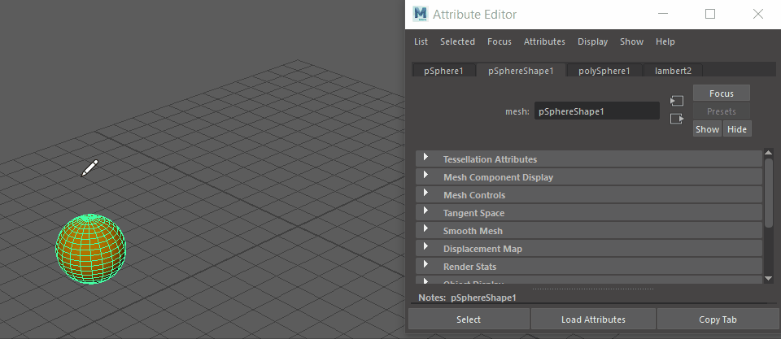

可以使用自己的剖面创建网格，而不是使用“扫描网格”(Sweep Mesh)从曲线创建网格中的默认剖面，但过程略有不同。
有关自定义扫描网格工作流示例，请参见“扫描网格”(Sweep Mesh)示例工作流：框架。
使用“扫描网格”(Sweep Mesh)创建自定义网格
- 创建球体。（(Create > Polygon Primitives > Sphere)）
- 创建曲线路径。
- 在曲线仍处于选定状态的情况下，从“多边形建模”(Poly Modeling)工具架中选择“扫描网格”(Sweep Mesh)
 ，或者从菜单栏中选择”(Create > Sweep Mesh)。
，或者从菜单栏中选择”(Create > Sweep Mesh)。
- 在属性编辑器(Attribute Editor)的“sweepMeshCreator1”选项卡中，从“扫描剖面”(Sweep Profiles)中选择“自定义”(Custom)
 。此时将显示“自定义扫描剖面”(Custom Sweep Profile)对话框。
。此时将显示“自定义扫描剖面”(Custom Sweep Profile)对话框。

- 在“自定义扫描剖面”(Custom Sweep Profile)对话框中，将“类型”(Type)设置为“多边形面”(Poly Face)，然后在球体上选择一个面。该面将沿曲线扫描。
在“扫描网格”(Sweep Mesh)选项中调整设置。
- 单击“确定”(OK)将所选内容设置为自定义剖面。
提示： 平坦或平面形状效果最佳；像球体或圆环这样的体积形状不能用作“多边形对象”(Poly Object)自定义剖面。只要总的来说是平坦的，曲线就可以在任何方向上起作用。
提示： 若要从多条曲线创建自定义网格，请先对曲线进行分组选择，然后选择“创建 > 扫描网格”(Create > Sweep Mesh) >  ，再从显示的“扫描网格选项”(Sweep Mesh Options)窗口中选择“每条曲线对应一个节点”(One node for each curve)。有关多条曲线的步骤，请参见使用“扫描网格”(Sweep Mesh)从曲线创建网格。
，再从显示的“扫描网格选项”(Sweep Mesh Options)窗口中选择“每条曲线对应一个节点”(One node for each curve)。有关多条曲线的步骤，请参见使用“扫描网格”(Sweep Mesh)从曲线创建网格。
，再从显示的“扫描网格选项”(Sweep Mesh Options)窗口中选择“每条曲线对应一个节点”(One node for each curve)。有关多条曲线的步骤，请参见使用“扫描网格”(Sweep Mesh)从曲线创建网格。